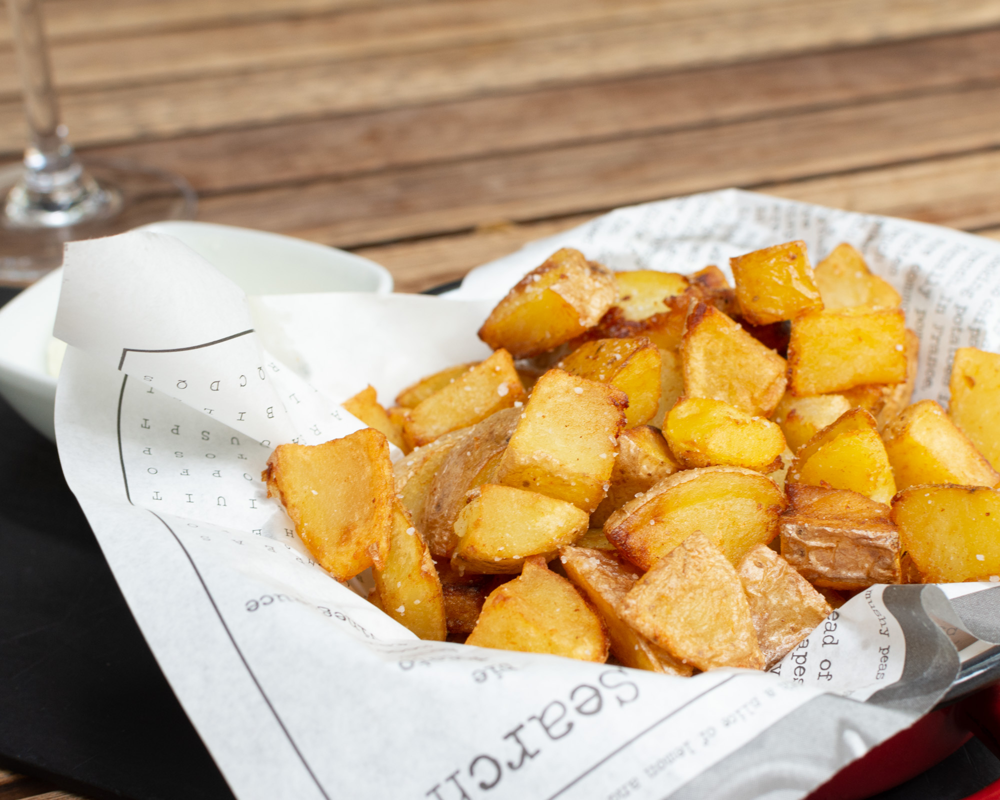

PATATES
Patates Encheesades
Daus de patates amb bacó, ceba i Cheddar fos Dados de patata con bacón, cebolla y Cheddar fundido
6,95€RACLETTE'ART
Cassola de patates al vapor amb formatge Raclette de llet crua Cazuela de patatas al vapor con queso Raclette de leche cruda
5,75€Les nostres Braves / Nuestras Bravas
Daus de patates acompanyades de 2 salses:
- Salsa Brava i all i oli de Gorgonzola i formatge de Cabra
Dados de patatas acompañados de 2 salsas:
- Salsa Brava y allioli de Gorgonzola y queso de Cabra
RACLETTE'ART MORBIER/TÒFONA
Cassola de les nostres patates de montanya amb tòfona, gratinades amb formatge Morbier Cazuela de nuestras patatas de montaña con trufa, gratinadas y con queso Morbier
6,25€